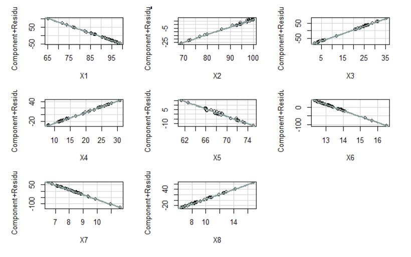

( 06 )
Underdeveloped Areas in NTT & NTB
Firth logistic regression · Spatial classification
Problem Statement
Development inequality in Eastern Indonesia, particularly in East Nusa Tenggara (NTT) and West Nusa Tenggara (NTB), remains a critical challenge. This study aims to model the probability and evaluate the classification accuracy of underdeveloped regions in these provinces using Firth's Penalized Logistic Regression.
The main methodological challenge in this study is the perfect separation problem, which frequently occurs in small-sample regional datasets, causing standard Maximum Likelihood Estimation (MLE) to fail to converge.
Methodology & Data
The analysis utilizes secondary data from 32 regencies/cities (29 regencies and 3 cities) across NTT and NTB. The dependent variable (Y) represents the regional status (1 = Underdeveloped, 0 = Developed). Initially, 8 predictor variables (X) were tested, covering infrastructure, education, economy, and health dimensions.
To handle perfect separation, the study applies Firth's Penalized Likelihood, which corrects the bias in parameter estimation. Variable selection was performed using Variance Inflation Factor (VIF) to eliminate multicollinearity, reducing the predictors to 2 significant variables in the final model.
Analysis & Output
Below are the key visual outputs from the analysis (generated using R):

Figure 1: Component + Residual Plot (CR Plots) to verify linearity assumption.
Setelah melewati uji multikolinearitas dan linearitas, model akhir direduksi menjadi dua variabel yang terbukti signifikan dan bebas dari masalah multikolinearitas.
Figure 2: Receiver Operating Characteristic (ROC) Curve showing an AUC of 0.972.

Figure 3: Probability of a region being underdeveloped based on Poverty (X4) and Expected Years of Schooling (X6).
Results & Insights
The final Firth Logistic Regression model demonstrated excellent performance with a McFadden Pseudo R-Square of 71.23%, a classification accuracy of 87.5%, and a very high AUC score of 0.972.
- Poverty Percentage (X4): Has a significant positive effect. The odds ratio of 1.412 indicates that for every 1% increase in the poverty rate, the odds of a region being underdeveloped increases by 1.412 times.
- Expected Years of Schooling (X6): Has a significant negative effect. An increase of one year in expected schooling reduces the odds of a region being underdeveloped to 0.095 times. Higher educational opportunities significantly minimize the likelihood of a region remaining underdeveloped.
Conclusion
Alleviating regional underdevelopment in NTT and NTB requires policy interventions that focus on direct economic poverty reduction, balanced with the continuous expansion of educational access and quality. These two factors are the most robust predictors in classifying regional status.